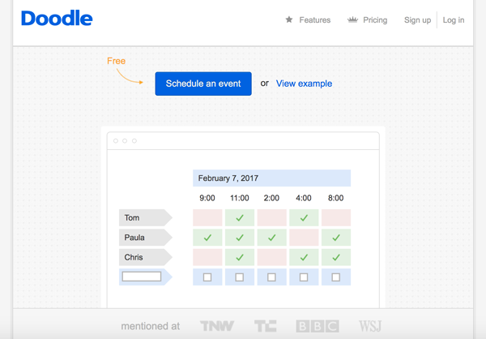

Doodle Poll Review
Doodle Poll is a way to determine what time multiple people are all available to meet up or find time to see each other. It is an integral part of my job as a student manager at Campus Rec and Unions because it makes it easier to schedule leadership meetings or group trainngs with lifeguards.
The interface is simple and clean and relatively easy to use. The home page can be seen above. It clearly has a button to press and shows an example of what your survey will look like. It follows generalities from most everyday designs as explained by Bill DeRouchey. The colors are simple: red means not available at that time and green means prefers that time. These colors commonly mean such things.

Once you click on the 'Schedule and Event' button, the page above is seen. This page is a form and is easy and clear to use. You enter your information to then create a doodle poll. The buttons are often blue on this website to match its color scheme but are always large and visible.

This is what a finished doodle poll will look like. The buttons are once again blue and clearly labeled while the red and green show negative and positive traits like being available or unavailable.